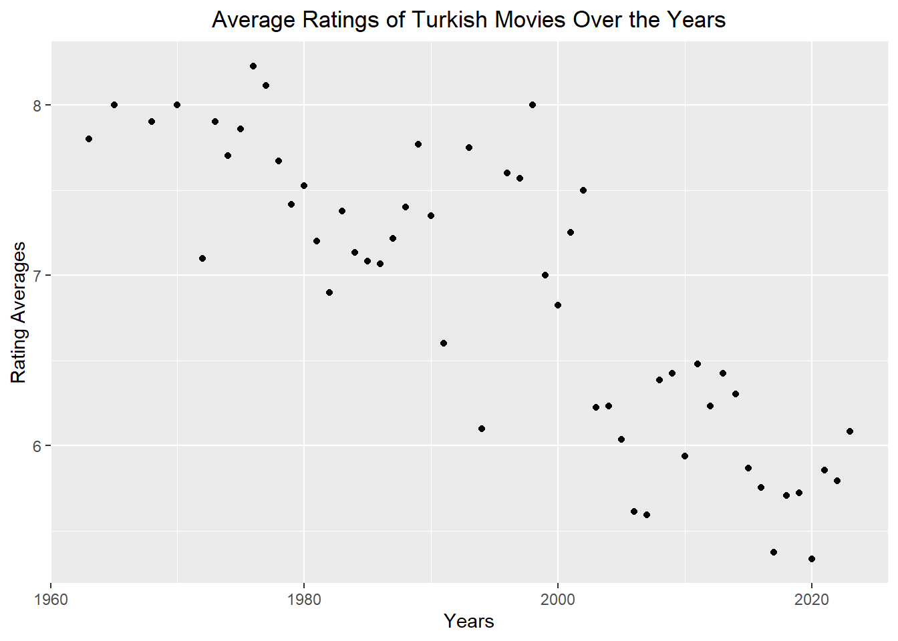
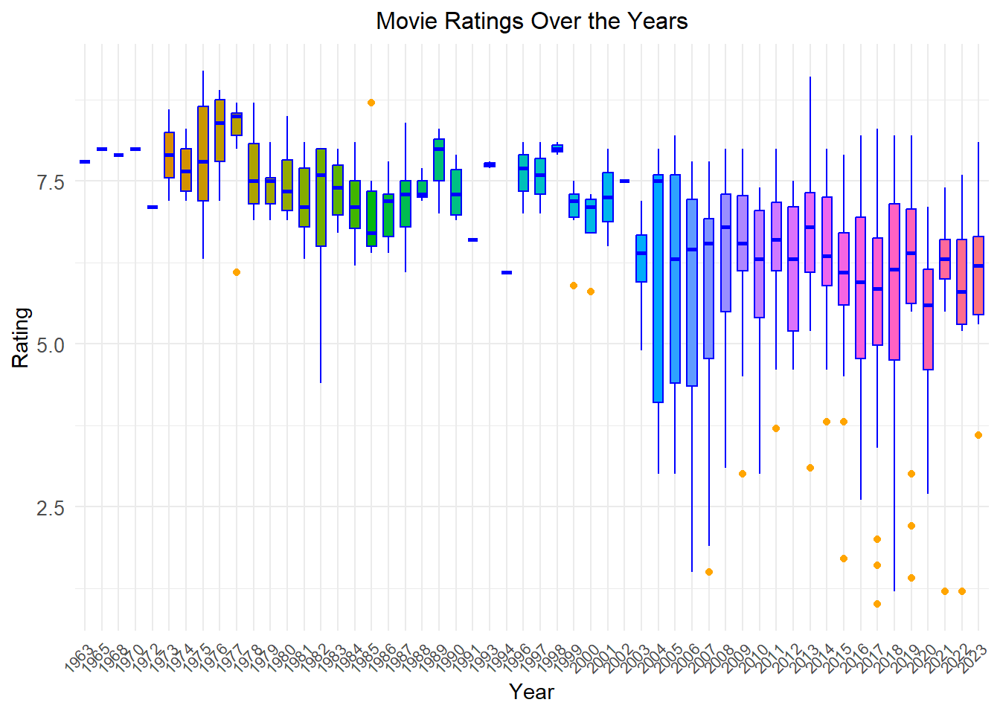

# Loading necessary librariessuppressPackageStartupMessages(library(tidyverse))suppressPackageStartupMessages(library(reshape2))suppressPackageStartupMessages(library(rvest))library(tidyverse)library(stringr)library(rvest)library(ggplot2)library(knitr)library(reshape2)library(lubridate)# Defining the url before 2010url_before_2010 <-"https://m.imdb.com/search/title/?title_type=feature&release_date=,2009-12-31&sort=moviemeter,asc&num_votes=2500,&country_of_origin=TR&count=250"# Defining the url years between 2010 and nowurl_2010_2023 <-"https://m.imdb.com/search/title/?title_type=feature&release_date=2010-01-01,2023-12-31&sort=moviemeter,asc&num_votes=2500,&country_of_origin=TR&count=250"
Question 2
Show the code
data_1 <-read_html(url_before_2010)# Scraping and cleaning movie datas before year 2010name_1 <- data_1 |>html_nodes('.ipc-title__text')name_1 <-html_text(name_1)name_1 <-tail(head(name_1,-1),-1)name_1 <-str_split(name_1, " ", n=2)name_1 <-unlist(lapply(name_1, function(x) {x[2]}))rating_1 <-data_1 |>html_nodes('.ratingGroup--imdb-rating')rating_1 <-html_text(rating_1)rating_1 <-substr(rating_1,1,3)rating_1 <-as.numeric(rating_1)year_1 <- data_1 |>html_nodes('.dli-title-metadata-item:nth-child(1)')year_1 <-html_text(year_1)year_1 <-as.numeric(year_1)duration_1 <- data_1 |>html_nodes('.dli-title-metadata-item:nth-child(2)')duration_1 <-html_text(duration_1)duration_1 <-60*as.numeric(substr(duration_1,1,1))+ifelse(nchar(duration_1)>2,as.integer(substring(duration_1,nchar(duration_1)-2,nchar(duration_1)-1)),0)vote_1 <- data_1 |>html_nodes('.kRnqtn')vote_1 <-html_text(vote_1)vote_1 <-sub(pattern ="Votes", replacement ="", x = vote_1)vote_1 <-sub(pattern =",", replacement ="", x = vote_1)vote_1 <-as.numeric(vote_1)# Scraping and cleaning movie datas after year 2010data_2 <-read_html(url_2010_2023)name_2 <- data_2 |>html_nodes('.ipc-title__text')name_2 <-html_text(name_2)name_2 <-tail(head(name_2,-1),-1)name_2 <-str_split(name_2, " ", n=2)name_2 <-unlist(lapply(name_2, function(x) {x[2]}))rating_2 <- data_2 |>html_nodes('.ratingGroup--imdb-rating')rating_2 <-html_text(rating_2)rating_2 <-substr(rating_2,1,3)rating_2 <-as.numeric(rating_2)year_2 <- data_2 |>html_nodes('.dli-title-metadata-item:nth-child(1)')year_2 <-html_text(year_2)year_2 <-as.numeric(year_2)duration_2 <- data_2 |>html_nodes('.dli-title-metadata-item:nth-child(2)')duration_2 <-html_text(duration_2)duration_2 <-60*as.numeric(substr(duration_2,1,1))+ifelse(nchar(duration_2)>2,as.integer(substring(duration_2,nchar(duration_2)-2,nchar(duration_2)-1)),0)vote_2 <- data_2 |>html_nodes('.kRnqtn')vote_2 <-html_text(vote_2)vote_2 <-sub(pattern ="Votes", replacement ="", x = vote_2)vote_2 <-sub(pattern =",", replacement ="", x = vote_2)vote_2 <-as.numeric(vote_2)# Combining two link's datasnames <-c(name_1,name_2)ratings <-c(rating_1,rating_2)years <-c(year_1,year_2)durations <-c(duration_1,duration_2)votes <-c(vote_1,vote_2)movies <-data.frame(names,years,durations,ratings,votes)kable(head(movies, 10), caption ="Movies Dataframe")
Movies Dataframe
names
years
durations
ratings
votes
Nefes: Vatan Sagolsun
2009
128
8.0
35022
Babam ve Oglum
2005
108
8.2
91037
Masumiyet
1997
110
8.1
19295
Kader
2006
103
7.8
16264
Uzak
2002
110
7.5
22374
Eskiya
1996
128
8.1
71704
A.R.O.G
2008
127
7.3
44635
Sevmek Zamani
1965
86
8.0
7131
Hababam Sinifi
1975
87
9.2
42512
Üç Maymun
2008
109
7.3
22663
Question 3
a-)
Show the code
# Arrange the data frame in descending order by Ratingmovies <- movies[order(movies$ratings, decreasing =TRUE),]# Top 5 and bottom 5 movies based on user ratingstop5_movies <-head(movies, 5)bottom5_movies <-tail(movies, 5)# Print top and bottom moviescat("Top 5 Movies:\n")
I can say the following about the films in the top 5: Like all Turkish people, I watched them all many times and I think they deserve the ratings they got. All of them are movies that have been watched over and over again for years and continue to be watched.
I don’t have enough information to comment on the last 5 movies. There are some I’ve heard of but I haven’t watched any of them.
b-)
Here are my top three favorite movies from that list.
Show the code
movies %>%filter(names =="Ayla: The Daughter of War"| names =="Yedinci Kogustaki Mucize"| names =="Babam ve Oglum")
names years durations ratings votes
1 Ayla: The Daughter of War 2017 125 8.3 42992
2 Babam ve Oglum 2005 108 8.2 91037
3 Yedinci Kogustaki Mucize 2019 132 8.2 54172
c-)
Show the code
# Bar plot of Number of Movies Over the Yearsggplot(movies, aes(x =factor(years))) +geom_bar(fill ="orange", color ="black") +labs(x ="Year", y ="Number of Movies") +ggtitle("Number of Movies Over the Years") +theme_minimal() +theme(legend.position ="none",axis.text.x =element_text(angle =45, hjust =1, size =6),axis.text.y =element_text(size =8),plot.title =element_text(size =12, hjust =0.5))
Show the code
# Average Ratings of movies over the yearsmovies %>%group_by(years) %>%summarize(rating_averages =mean(ratings)) %>%ggplot(aes(years, rating_averages)) +geom_point() +labs(x ="Years", y ="Rating Averages") +ggtitle("Average Ratings of Turkish Movies Over the Years") +theme(plot.title =element_text(hjust =0.5))

Plot shows a definite downward trend in ratings over time.
Show the code
# Box Plots of Movie Ratings Over the Yearsmovies$years <-as.factor(movies$years)ggplot(movies, aes(x = years, y = ratings, fill =factor(years))) +geom_boxplot(color ="blue", outlier.color ="orange", notch =FALSE, notchwidth =0.5, width =0.6) +labs(x ="Year", y ="Rating") +ggtitle("Movie Ratings Over the Years") +theme_minimal() +theme(legend.position ="none",axis.text.x =element_text(angle =45, hjust =1, size =8),axis.text.y =element_text(size =10),plot.title =element_text(size =12, hjust =0.5)) +scale_x_discrete(labels =function(x) substr(x, 1, 4))

Over the years, ratings have declined, with the gap between film ratings widening noticeably and significantly.
d-)
Show the code
correlation <-cor(movies$votes, movies$ratings)cat("Correlation between Votes and Ratings:", correlation, "\n")
Correlation between Votes and Ratings: 0.1308758
Show the code
ggplot(movies, aes(x = votes, y = ratings, color = ratings)) +geom_point() +geom_smooth(method ="lm", se =FALSE, color ="orange", formula = y ~ x) +labs(x ="Votes", y ="Ratings") +ggtitle("Scatter Plot of Votes vs Ratings") +theme_minimal() +theme(legend.position ="none") +theme(plot.title =element_text(hjust =0.5))
The correlation coefficient, which stands at 0.130875, is rather low. We might conclude that there is a weak linear relationship between Ratings and Votes in this instance.
e-)
Show the code
correlation_duration_rating <-cor(movies$durations, movies$ratings)cat("Correlation between Duration and Ratings:", correlation_duration_rating, "\n")
Correlation between Duration and Ratings: -0.03186651
Show the code
ggplot(movies, aes(x = durations, y = ratings, color = ratings)) +geom_point() +geom_smooth(method ="lm", formula = y ~ x, se =FALSE, color ="orange", show.legend =FALSE) +labs(x ="Durations", y ="Ratings") +ggtitle("Scatter Plot of Durations vs Ratings") +theme_minimal() +theme(legend.position ="none") +scale_x_log10() +theme(plot.title =element_text(hjust =0.5))
With a correlation of 0.03186651, it is rather low. We may conclude that there is a weak linear relationship between Durations and Votes in this instance. We may conclude that there is a better correlation between Ratings and Votes when comparing Ratings with Durations and Ratings with Votes.
names years
1 Yedinci Kogustaki Mucize 2019
2 Kis Uykusu 2014
3 Nefes: Vatan Sagolsun 2009
4 Ayla: The Daughter of War 2017
5 Babam ve Oglum 2005
6 Ahlat Agaci 2018
7 Bir Zamanlar Anadolu'da 2011
8 Eskiya 1996
9 G.O.R.A. 2004
10 Vizontele 2001
11 Her Sey Çok Güzel Olacak 1998
Show the code
# Join the data framesimdb_top1000$year <-as.numeric(as.character(imdb_top1000$year)) merged_data <-left_join(imdb_top1000,movies, by =c("names", "years"))merged_data
names years year durations ratings votes
1 Yedinci Kogustaki Mucize 2019 2019 132 8.2 54172
2 Kis Uykusu 2014 2014 196 8.0 54647
3 Nefes: Vatan Sagolsun 2009 2009 128 8.0 35022
4 Ayla: The Daughter of War 2017 2017 125 8.3 42992
5 Babam ve Oglum 2005 2005 108 8.2 91037
6 Ahlat Agaci 2018 2018 188 8.0 27015
7 Bir Zamanlar Anadolu'da 2011 2011 157 7.8 49365
8 Eskiya 1996 1996 128 8.1 71704
9 G.O.R.A. 2004 2004 127 8.0 66032
10 Vizontele 2001 2001 110 8.0 38403
11 Her Sey Çok Güzel Olacak 1998 1998 107 8.1 27122
Show the code
# The top 11 movies from first data frame based on their rankindex_2 <-order(movies$rating,decreasing =TRUE )top_11 <-head(index_2,11)top_11 <- movies[top_11[1:11],]top_11
If you compare both tables, the first thing you will notice is the year of release of the movies, especially the lack of older movies in the TOP 1000 IMDB list. It’s very likely that you’re only considering movies released after a certain year.